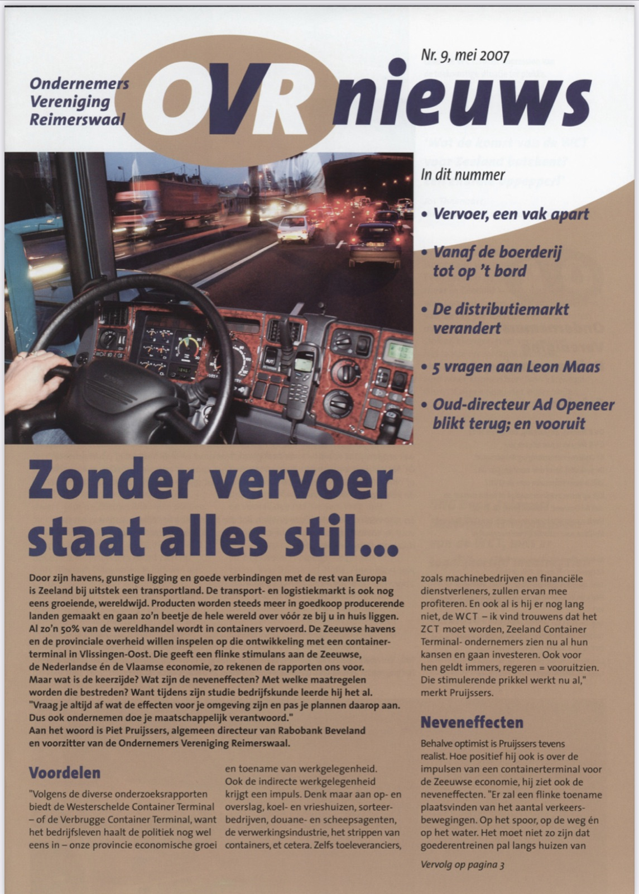
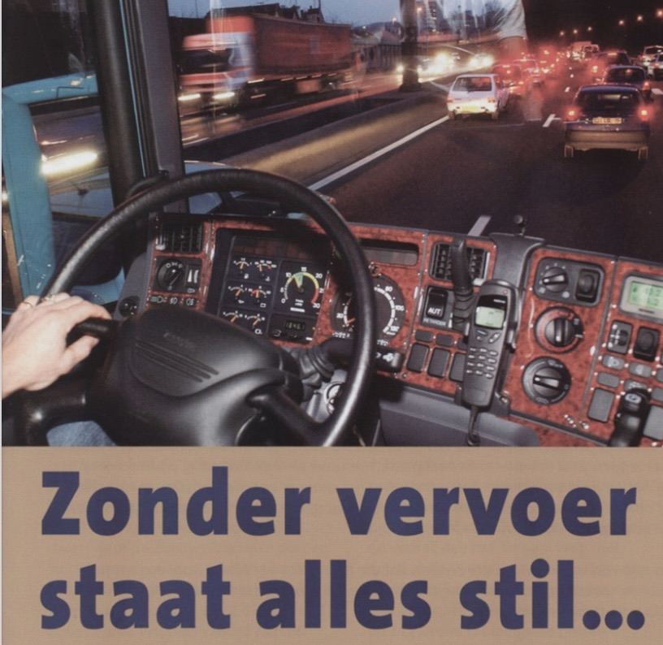

Door zijn havens, gunstige ligging en goede verbindingen met de rest van Europa is Zeeland bij uitstek een transportland. De transport- en logistiekmarkt is ook nog eens groeiende, wereldwijd. Producten worden steeds meer in goedkoop producerende landen gemaakt en gaan zo’n beetje de hele wereld over vóór ze bij u in huis liggen. Al zo’n 50% van de wereldhandel wordt in containers vervoerd. De Zeeuwse havens en de provinciale overheid willen inspelen op die ontwikkeling met een containerterminal in Vlissingen-Oost. Die geeft een flinke stimulans aan de Zeeuwse, de Nederlandse én de Vlaamse economie, zo rekenen de rapporten ons voor.

Maar wat is de keerzijde? Wat zijn de neveneffecten? Met welke maatregelen worden die bestreden? Want tijdens zijn studie bedrijfskunde leerde hij het al. “Vraag je altijd af wat de effecten voor je omgeving zijn en pas je plannen daarop aan. Dus ook ondernemen doe je maatschappelijk verantwoord.” Aan het woord is Piet Pruijssers, algemeen directeur van Rabobank Beveland en voorzitter van de Ondernemers Vereniging Reimerswaal.
Voordelen
“Volgens de diverse onderzoeksrapporten biedt de Westerschelde Container Terminal –of de Verbrugge Container Terminal, want het bedrijfsleven haalt de politiek nog wel eens in- onze provincie economische groei en toename van werkgelegenheid. Ook de indirecte werkgelegenheid krijgt een impuls. Denk maar aan op- en overslag, koel- en vrieshuizen, sorteerbedrijven, douane- en scheepsagenten, de verwerkingsindustrie, het strippen van containers, et cetera. Zelfs toeleveranciers, zoals machinebedrijven en financiële dienstverleners, zullen ervan mee profiteren. En ook al is hij er nog lang niet, de WCT –ik vind trouwens dat het ZCT moet worden, Zeeland Container Terminal- ondernemers zien nu al hun kansen en gaan investeren. Ook voor hen geldt immers, regeren = vooruitzien. Die stimulerende prikkel werkt nu al,” merkt Pruijssers.
Neveneffecten
Behalve optimist is Pruijssers tevens realist. Hoe positief hij ook is over de impulsen van een containerterminal voor de Zeeuwse economie, hij ziet ook de neveneffecten. “Er zal een flinke toename plaatsvinden van het aantal verkeersbewegingen. Op het spoor, op de weg én op het water. Het moet niet zo zijn dat goederentreinen pal langs huizen van mensen razen. Dat er geen ramen meer open kunnen of ze niet meer in hun tuintje kunnen zitten. Of dat we overal in ons landschap hoge muren van containers zien? En wat gebeurt er met de infrastructuur, zodat onze wegen niet dichtslibben. Ik zie het al voor me. Hoogzomer, A58, ellenlange rijen vrachtwagens onderweg van en naar Vlissingen. Daartussen…, meegezogen met de stroom, de vele auto’s met caravans.”
Een integraal beleid, dat is waar Pruijssers voor pleit. En een lange termijn budget. “Kijk naar de WOV. Eindelijk ligt ie er dan. Maar hoe bereik je hem? Over een 2-baans weg. Vele tientonners dieselen dagelijks dwars door de Zeeuws-Vlaamse dorpen. Slecht voor de wegen, slecht voor de huizen, slecht voor de mensen. En slecht voor de transporteur, want die kan niet opschieten.” Pruijssers toont zich nu zelfs filosoof: “Misschien is het wel iets te futuristisch, maar de toekomst is dichtbij! Begin nu al aan een speciale vrachtwagenstrook, langs de A58. Goed voor de doorstroming, zeker in drukke seizoenen. Zorg voor natuurcompensatie, er zijn tal van geslaagde voorbeelden. Maar ga tevens alvast aan de slag met lange termijnoplossingen. Wie weet, komen we straks inderdaad wel uit op transportbuizen onder de grond. Metro’s en tunnels zijn toch eigenlijk niet veel anders?”

Oplossingen
Waar het Pruijssers om gaat is dat met name de provinciale bestuurders moeten zorgen dat het evenwicht in de Zeeuwse samenleving bewaard blijft. “Ik vind dat het en-en is, niet of-of. We moeten zeker profiteren van de kansen die de wereldwijde transportsector ons biedt. En het is mooi dat de Zeeuwse overheid het mogelijk maakt voor ondernemers om die kansen te benutten, want van de blauwe lucht en groene ruimte kunnen we nu eenmaal niet leven. Maar doe het wel integraal en vooral, doe het samen. Weg met de eilandjes, weg met de versnippering. Laatst viel het me weer op. Ik was op een internationale agrarische beurs en zag overal mooie grote presentaties. Van Duitsland, Italië, Frankrijk. En Nederland? Zo af en toe viel mijn oog op een lokale ondernemer uit de Achterhoek en de Betuwe…
Pruijssers eindigt met een oproep aan de Zeeuwse overheid: “Geen wildgroei aan (water-)wegen en spoorlijnen, kris kras door het landschap, maar een geïntegreerde ruimtelijke ordening! Want die blauwe lucht en groene ruimte zijn wel degelijk sterke punten. Even tevoren zei ik nog dat het niet kan, maar in Zeeland kunnen we het eigenlijk wel, daarvan leven. Want wat te denken van de talrijke toeristen en recreanten die elk jaar naar Zeeland komen? Ook zij brengen heel veel geld in het laatje én werkgelegenheid. Het zou toch vreselijk zijn, als die ons niet meer kunnen bereiken vanwege files. Of erger nog, niet meer willen…”
Ondernemers over transport:
“Wat de komst van de WCT voor Zeeland betekent? “Een verschrikkelijke oppepper!” Jos Theenaaert, directeur Comex Douane-agentschap.
“Ook al is containertransport voor ons bedrijf niet direct relevant, toch denk ik dat de WCT een prima stimulans geeft aan de Zeeuwse economie,“ Jan de Koeijer, directeur De Koeijer Transport.
“Een containerterminal? Ik ben vóór, de Zeeuwse economie heeft die hard nodig! En of dat nu Westerschelde Container Terminal wordt of Verbrugge Container Terminal, dat maakt niet uit…,” Kitty van Hoek-Stoutjesdijk, directeur Garage, Autobergings- en Taxibedrijf Van Hoek.
“ING Bank Zuidwest-Nederland is voorstander van de WCT, mits er tegelijkertijd maatregelen getroffen worden tegen verkeerscongestie, geluidsoverlast en horizonvervuiling,” Chris Cornet, directeur ING Bank Goes-Zierikzee.
“De WCT? Die moet er zo snel mogelijk komen!” Ad Openeer, v.m. directeur Transportbedrijf Van Houte Openeer.